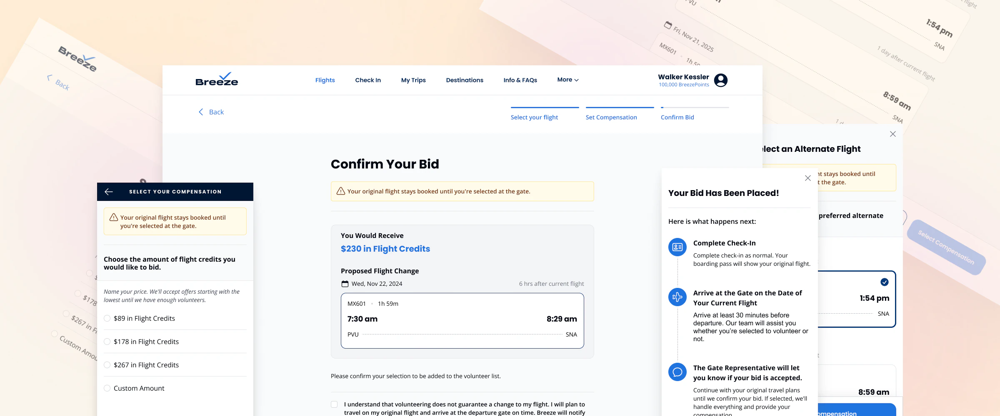

Turning a 5 Percent Opt In Into a Trusted, Understandable Experience
Why Overcapacity Volunteering Matters for Breeze and Its Customers
Executive Summary
Breeze's overcapacity volunteer bidding system lets passengers proactively offer flexibility when flights are oversold. The team was transitioning compensation from BreezePoints to flight credits, and reviewing performance data revealed the existing experience was underperforming, opening the door to a broader redesign.
I led the redesign end to end, from discovery research through validation testing, with a focus on comprehension, trust, and engagement during check in.
Comprehension improved from 50 percent to 100 percent, trust concerns were eliminated, and engagement intent rose 27 percent. After shipping, production data confirmed the impact: mid-funnel completion more than doubled at every airport, and at SNA the new flow drove 33 percent more confirmed bids on 16 percent fewer invitations.
Role:
UX/UI Designer, UX Researcher
Duration:
One month
Responsibilities:
UX research, UX/UI design, prototyping
Introduction
A Feature Update That Revealed a Bigger Usability Problem
The initial goal of the work was to manage updates related to the shift from BreezePoints to flight credits. However, reviewing performance data revealed a deeper issue.
The initial invitation to volunteer had a conversion rate of approximately 5 percent. This was unexpectedly low, especially given that the most disruptive part of the flow occurs later when users evaluate alternate flight options.
This suggested that users were disengaging before fully understanding the offer.
Research
Early Signals of Failure: Low Engagement Where It Was Least Expected
Based on the structure of the flow, I expected abandonment to be highest on the flight selection screen, when customers might realize alternate flights did not work for their schedules.
Instead, most users were declining immediately at the first invitation. This pointed to a problem with how the offer was being introduced rather than with the tradeoff itself.
Forming the Hypothesis: Too Much Text, Too Little Clarity
I hypothesized that the low engagement was driven by two primary factors:
- An overwhelming amount of copy presented during check in
- A lack of clarity around what was being offered and how the process worked
Check in is an inherently stressful task. Users are focused on speed and accuracy, not reading dense explanations or evaluating unfamiliar systems.
Validating the Problem Through Usability Testing
To test this hypothesis, I conducted usability testing with six participants using a think aloud protocol and our staging site to measure the performance of our existing flow.
Research Overview
Participants
- Six users, ages 23 to 66
- Primarily infrequent flyers
- No prior Breeze experience
- Primary airlines were Delta and United
Test Structure
Participants walked through the full flow, including:
- Initial invite modal during check in
- Bid entry screen
- Alternate flight selection
- Confirmation screen
- Post bid confirmation
Research Questions
- How do users understand the offer?
- Where do users experience confusion?
- What prevents users from engaging?
First Impressions: Read As a Hustle
Three of six participants initially read the modal as a loyalty or rewards offer because of the BreezePoints framing. The rest read it as something worse:
It doesn't necessarily reflect positively on the airline... it's kind of a hustle to avoid having to pay.
The Bidding Step Felt Like Gambling
Participants struggled to understand the bidding screen's purpose, and the strategic framing landed as adversarial rather than fair:
It feels like a game designed to introduce a gambling element to the benefit of the house, which is Breeze.
Flight Selection Eroded Confidence
Users could compare alternate flights, but a handful of specific gaps emerged:
- Original flight details weren't visible alongside alternates
- Some alternate flights felt unrealistic due to long delays
- Whether seats on alternates were guaranteed wasn't clear
- No transparency around how many volunteers were needed
I'd rather not be locked into something. I'd rather see what my options are at the gate.
By the Confirmation Screen, Users Backed Out
Multiple participants expressed second thoughts at confirmation. Uncertainty around timelines, airport logistics, and guarantees made the process feel risky and not worth the effort. At that point, several said they would abandon and continue check in normally.
Design
Designing a Clearer, Lower Stress Flow From End to End
Based on research findings, I redesigned the entire experience with a focus on reducing cognitive load, improving clarity, and aligning the flow with user expectations.
Key Design Changes That Addressed Trust, Clarity, and Cognitive Load
Key changes included:
- Reducing copy throughout the flow
- Clarifying selected and hover states on flight cards
- Reordering the flow so users saw alternate flights before bidding
- Redesigning how flight credit options were displayed
- Simplifying the bid summary UI
- Adding persistent reassurance that the original flight remained booked
What Changed When We Reordered the Flow
Showing flight options before bidding eliminated post-decision regret. No participants expressed second thoughts after seeing alternate flights first, and decisions felt more informed and confident.
Results
Measuring the Impact: Original vs Redesign
The redesign was validated with Maze testing (n=3) and compared against the original moderated UserTesting study (n=6).
100%
Comprehension
Up from 50%
0
Cognitive Load Complaints
Fully eliminated
27%
Engagement Increase
Willingness to explore
5/5
Confidence Score
Keeping original flight
| Original Experience | Redesign | Improvement | |
|---|---|---|---|
| Comprehension | 50% | 100% | +50% |
| Trust Concerns | High | Eliminated | Resolved |
| Engagement Intent | 40% | 67% | +27% |
| Immediate Declines | High | Reduced | -27% |
| Confidence Score | Lower | 5/5 | Perfect |
What This Project Demonstrated About Transparency and Timing
This project demonstrated that clarity and timing matter most when users are under stress. By reducing complexity, clearly communicating tradeoffs, and aligning the flow with user expectations, the redesigned experience transformed a mistrusted interaction into one users could confidently evaluate.
The redesign introduced no new critical issues and was recommended to ship based on validation results.
Production Impact
What We Saw After the Redesign Shipped
Validation testing was promising, but production data confirmed the redesign delivered real improvements at scale.
By reordering the flow so guests see available alternate flights before selecting a bid amount, the redesign matched users' actual decision-making process. The funnel data reflected it.
The SNA Story: Pure UX Impact, Not Volume
SNA had 16 percent fewer invitations in the new flow but 33 percent more confirmed bids. Strong evidence that the redesign was driving real user behavior change, not just benefiting from increased inventory or traffic.
Mid-Funnel Completion: From Drop-Off to Conversion
For guests who started engaging with the flow, completion rates improved dramatically across every origin airport. This is the metric where UX has the most direct influence: what happens once a guest is already in the experience.
| Origin | Old Flow (Aug–Nov) | New Flow (Jan–Mar) | Change |
|---|---|---|---|
| TPA | 19% | 48% | +29 pp |
| MCO | 16% | 47% | +31 pp |
| SNA | 35% | 64% | +29 pp |
| PVU | 33% | 54% | +21 pp |
End-to-End Conversion: Modest Gains, Bounded by Inventory
End-to-end conversion (invite to confirmed) improved across the board, but more modestly than mid-funnel, because top-of-funnel conversion is gated by alternate flight availability, which UX cannot change.
| Origin | Old | New | Change |
|---|---|---|---|
| TPA | 0.90% | 1.06% | +18% |
| MCO | 0.83% | 1.42% | +71% |
| SNA | 2.27% | 3.60% | +59% |
| PVU | 1.78% | 1.94% | +9% |
What This Means for the Business
- Guests who find a viable flight are now far more likely to complete the flow
- Top-of-funnel conversion stays gated by alternate flight availability. UX cannot change inventory.
We targeted the UX problem we could solve, not the inventory problem we couldn't.